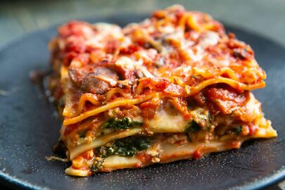

Lasagna

- First up you need to infuse the milk for the béchamel, in a medium saucepan add the soy/oat milk followed by the onion, bay, nutmeg & seasonings. Place the saucepan over a low heat & stir every now and then.
- For the ragu, in a large saucepan placed over a medium heat, add the oil followed by the onion, garlic, celery & a pinch of salt. Sweat the mix down for around 3-4 minutes.
- Add the courgette, aubergine & mixed herbs. Turn the heat down lower, pop a lid on & allow the mix to cook for 3-4 minutes.
- Add the vegan mince & stir well. Cook for 2-3 minutes.
- Deglaze the pan with the balsamic vinegar & chopped tomatoes.
- Stir in the tomato puree, then pop the lid on and let the mix cook over a low heat for 10-15 minutes.
- For the béchamel, in a saucepan add the vegan margarine and place the pan over a low heat.
- When the margarine is melted, add the flour. Using a spatular mix well. Cook the mix whilst stirring for a couple of minutes to cook out the flour. It should resemble a paste like consistency.
- Gradually whisk in the infused milk, a little at a time.
- Once you'd added all the milk, the béchamel should be creamy, if you want to make it cheesy, add vegan cheese & nutritional yeast.
- Build your lasagne in your oven proof baking dish, a layer at a time, I like to do ragu, béchamel then pasta sheets. Repeat this until you have filled your dish. Making sure the top layer is béchamel.
- Bake the lasagne in your oven for 45 minutes. Then serve.